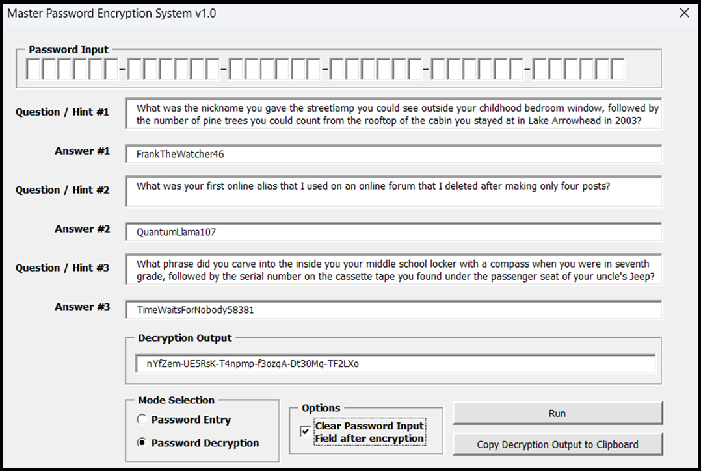
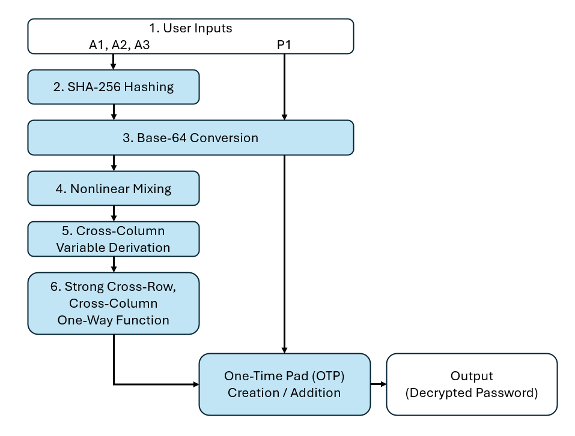

The Master Password Encryption System (MPES) is a secure Excel-based framework designed to store and recover a user’s password manager master password without ever saving it directly, either in plaintext or encrypted form. Instead, the user inputs three personal secret answers (to questions of their choosing), which are transformed through layered cryptographic operations to reconstruct the password when needed. This system ensures that even if the file containing the password is compromised, the master password cannot be recovered without all three correct answers.
 The system operates through a series of structured steps. First, the user provides three secret answers (A1, A2, A3) along with a 36-character master password (temporarily). Each answer is hashed using the SHA-256 algorithm, and the last 16 characters of each 64-character hexadecimal hash are extracted to form a 3x16 character array. Each character is then mapped to a number from 0 to 63 using a custom Base-64 lookup table, resulting in a 3x16 numerical matrix. Within each column, pairwise XOR operations are performed—(A⊕B), (B⊕C), and (C⊕A)—with additional bit-rotations or shifts to introduce further entropy, producing a scrambled 3x16 matrix. A fourth row is then synthesized by taking the modulo-64 sum of each column, resulting in a 4x16 array. These 48 values are used to generate 96 additional derived variables through balanced XOR and rotation operations, forming a complete set of 144 variables. These are then input into 144 unique formulas—each using 3 to 4 inputs and combining them with XOR and shifting—to create a 4x36 matrix where all variables are evenly represented. Each 4-element column in this matrix is then passed into a custom deterministic and non-reversible one-way operation using a shuffled S-box, to yield a 6x6 matrix of values ranging from 0 to 63. In parallel, the 36-character master password is split into a 6x6 grid and similarly mapped to Base-64 integers. A one-time pad is produced by subtracting the hashed array from the password array modulo 64. This resulting 6x6 pad can be stored securely, and the original password can only be reconstructed if (and only if) the user re-enters the exact same three secret answers.